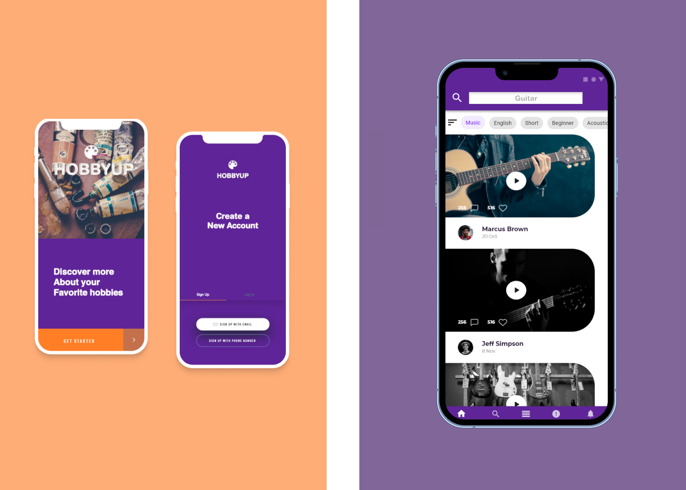
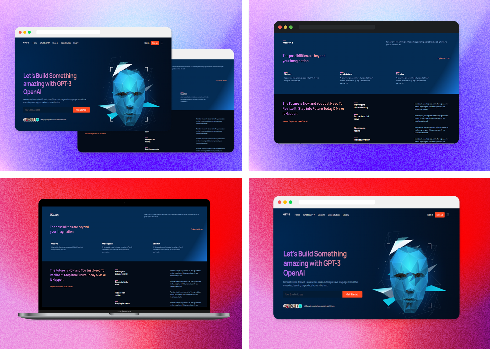
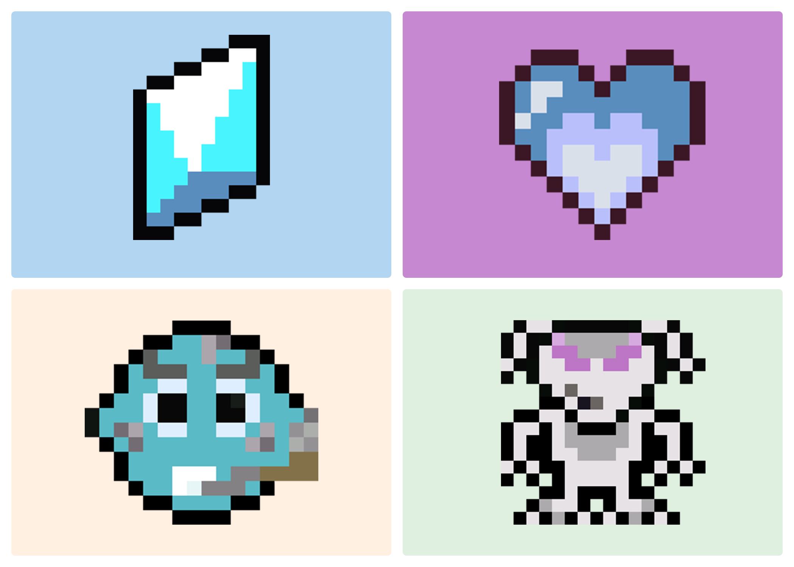

Pedro Nevarez
🚀 Welcome to my website
📜 Web Development
I am a web developer with a background in visual design, 3D modeling, and illustration. I am passionate about creating great digital products. I am able to work with a wide range of medias, delivering creative and innovative design solutions across all touch-points to enhance user experience, grow market share, and maximise return on investment.
👩🏽🚀 Projects
HobbyUp Application Concept
Designed an application prototype for a concept of an application idea involving hobbies. The idea for the application is a platform that can help users learn about their favorite hobbies and interact with the communities through the application. The design was created using Adobe XD and Photoshop.
GTP3 React Website
Utilized JavaScript React library to transform a design created through the prototyping software, Figma, into a fully functioning website. The webpage will display on most devices because of the adaptive media queries used to style it.
Planet Z Videogame
Developed a 2D platformer video game using GDevelop game engine. I created all the art assets used in the game with programs such as Aseprite for pixel art and Photoshop for general art. There is also music that was created by using the digital audio workstation, Ableton, to create a soundtrack for the video game.
🤵 Work History
Creative Director in Music
Mulla Music
Worked alongside a team to help create marketing campaigns for Orlando musicians. Through this role, I helped generate 15,000+ streams across multiple music streaming platforms. Many forms of media such as photography, video, graphic design, and audio were used to create mixed media assets for marketing campaigns.
Host and Waiter
Ay Jalisco
Bussed tables, presented menus, and took orders. Trained 2 new bussers, ensuring attention to detail and comprehensive understanding of restaurant methodology and practices.
Thanks for visiting!